Accessing Unix/Linux Programming Environments
Table of Contents
1 Overview
1.1 Rationale
This guide is meant to inform UMN students on options they have to access a Unix/Linux environment for course work in computer science. This applies to courses that use the C programming language like CSCI 2021 and CSCI 4061 and may be useful for other courses as well.
The first section provides information on UMN Unix computing resources and some links to tutorials on how to install Unix one personal computers. In the latter case, the focus is on the use of Virtual Machines so that a Linux environment can coexist with an existing Windows or Mac OSX installation rather than overwriting these more familiar environments.
1.2 Executive Summary
- Have Several Options
- Familiarize yourself with several ways to edit/compile/run code in a Unix environment so that if your primary mechanism fails, you have a backup. Expect your Internet Connection to go down at some point and have a non-networked solution (Virtual Machine or WSL).
- All Students
Learn about SSH and SCP to log into remote computers in a terminal. The commands
ssh / scpare installed by default on almost all platforms (Windows/Mac/Linux). Read the sections on SSH and SCP for quick introductions.CSE Labs provides some excellent physical and remote access options to Linux machines on campus.
- Most Students
- Most students find that using Visual Studio Code with Remote Editing works well for their day-to-day coding for the course. This has some pitfalls but is a good option to explore if you aren't sure of what to try first.
- Windows Users
- Your are encouraged to use a remote connection to true Unix Machines for coursework. It is possible to set up the Windows Subsystem for Linux (WSL) but this system has proved somewhat unreliable for students in recent years. It is also possible to set up a Virtual Machine to have a local Linux environment.
- Mac Users
- Your are encouraged to use a remote connection to true Unix Machines for coursework. It is possible to set up a Virtual Machine to work in a local Linux environment but students have reported difficulties with this on Mac in recent years. Apple no longer supports the tools we use for this class running natively.
- Linux Users
- You're already set for the most part as you're using the same OS as your professor and will reap the benefits thereof.
2 UMN Computing Resources
The UMN College of Science and Engineering (CSE) provides a wealth of computing resources including several ways to easily access UNIX/Linux environments.
2.1 Physical Access
CSE Labs provides several physical lab locations many of which have Linux computers with a Unix environment. Visiting a lab physically and working on their computers is a plausible way to get work done in courses that require such an environment.
This link lists the lab locations and their usage / hours of operation:
https://cse.umn.edu/cseit/classrooms-labs
Labs that list "Ubuntu" have Linux machines as Ubuntu Linux is a popular "flavor" of Linux. Be mindful of the times these labs are open and which labs have Unix machines listed as Ubuntu 16.04.
Keller 4-250 is likely the most popular lab for Computer Science students.
If you are reading this guide during a PLAGUE make sure to check which labs are open/closed. Plagues tend to limit lab availability to prevent the spread of disease.
2.2 2-Factor Authentication
Most UMN resources now require 2-factor authentication, including remote access to CSE Labs machines. You will need to install the Duo App on a mobile device to receive the verification prompts while logging into machines. After entering a username / password in a login sequence, usually one will get a final prompt to use Duo to verify the login. Keep track of your phone for this.
2.3 Graphical Login to Specific Lab Machines via FASTX
CSE Labs has implemented a web-based remote desktop connection to most Linux lab computers. This technology is referred to as "FASTX" and allows one to connect to lab machines graphically through a web browser.
Video Tutorial on Using FASTX and VOLE Login
List of FASTX Accessible Machines
Follow any of the links below to see and use your UMN login credentials (including a Duo Push verification).
| Machine | URL |
|---|---|
| FASTX 3 | |
csel-kh1250-01 |
https://csel-kh1250-01.cselabs.umn.edu |
csel-kh1250-10 |
https://csel-kh1250-10.cselabs.umn.edu |
csel-kh1250-37 |
https://csel-kh1250-37.cselabs.umn.edu |
csel-kh1262-01 |
https://csel-kh1262-01.cselabs.umn.edu |
csel-kh1262-28 |
https://csel-kh1262-28.cselabs.umn.edu |
csel-wb28-01 |
https://csel-wb28-01.cselabs.umn.edu |
csel-wb28-28 |
https://csel-wb28-28.cselabs.umn.edu |
csel-w103-30 |
https://csel-w103-30.cselabs.umn.edu |
csel-w103-58 |
https://csel-w103-58.cselabs.umn.edu |
csel-w106-01 |
https://csel-w106-01.cselabs.umn.edu |
csel-w106-33 |
https://csel-w106-33.cselabs.umn.edu |
csel-kh4240-01 |
https://csel-kh4240-01.cselabs.umn.edu |
csel-kh4240-10 |
https://csel-kh4240-10.cselabs.umn.edu |
| FASTX 2 | |
csel-kh4250-01 |
https://csel-kh4250-01.cselabs.umn.edu |
csel-kh4250-49 |
https://csel-kh4250-48.cselabs.umn.edu |
| VOLE (see below) | https://vole.cse.umn.edu |
Each listing gives the beginning and end of the machine ranges so for
the csel-kh1250-XX machines, any of the following will work:
- https://csel-kh1250-01.cselabs.umn.edu
- https://csel-kh1250-02.cselabs.umn.edu
- https://csel-kh1250-03.cselabs.umn.edu
- https://csel-kh1250-04.cselabs.umn.edu
- …
- https://csel-kh1250-37.cselabs.umn.edu
All machines that can be accessed are in the CSE Labs Classrooms and Labs Page though not all of the machines are Linux or open to FASTX connections.
Text / Image Tutorial for FASTX Login
Below are a series of images showing how one can access a UMN Linux machine via FastX by clicking through the web browser.
Visit the web address associated with a specific Linux machine, in
this case csel-wb28-01 which is at https://csel-wb28-01.cselabs.umn.edu
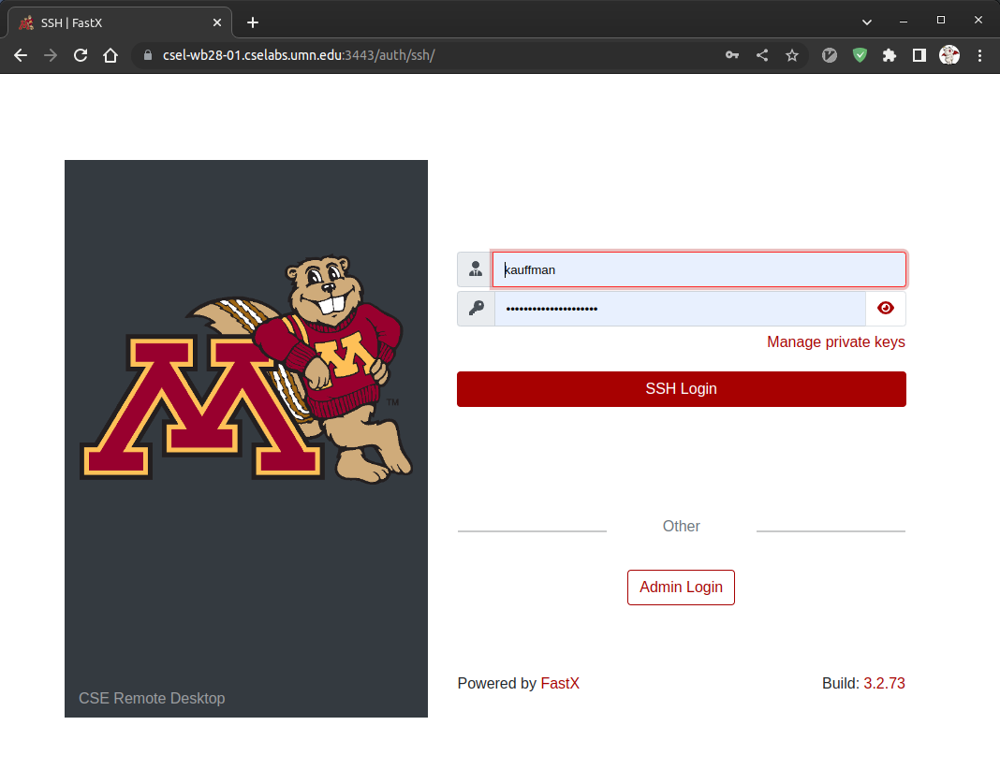
After typing in your X.500 username and password, select a Duo 2-factor authentication method. Then use your phone to verify the login, possibly using the Duo App.
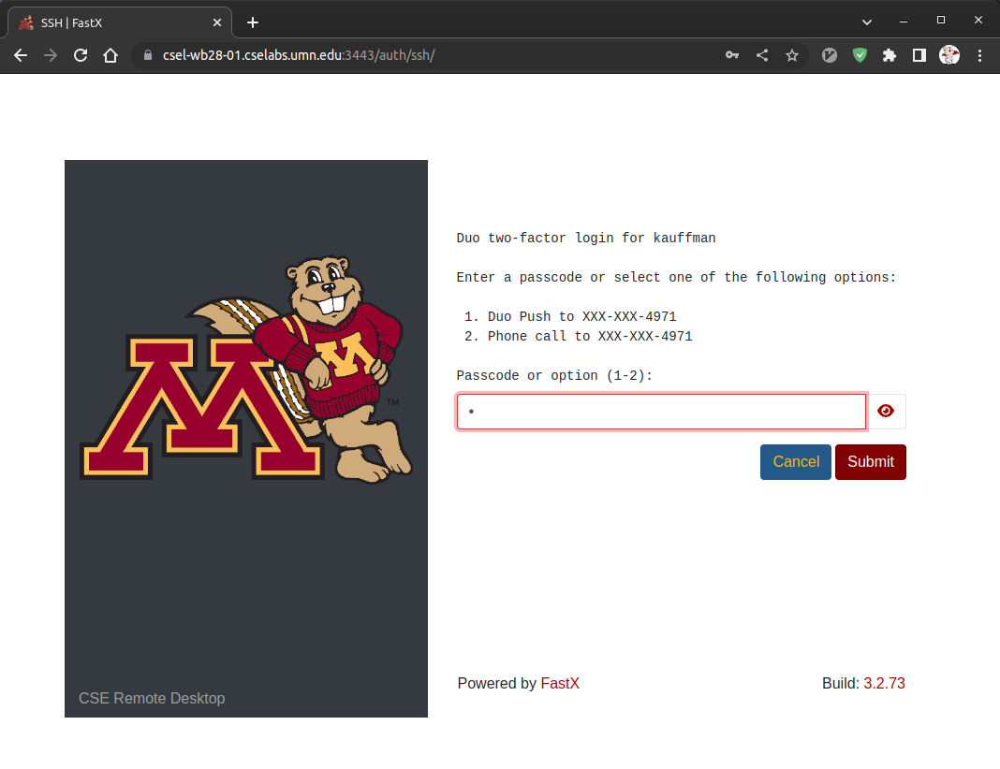
Close the Welcome message.
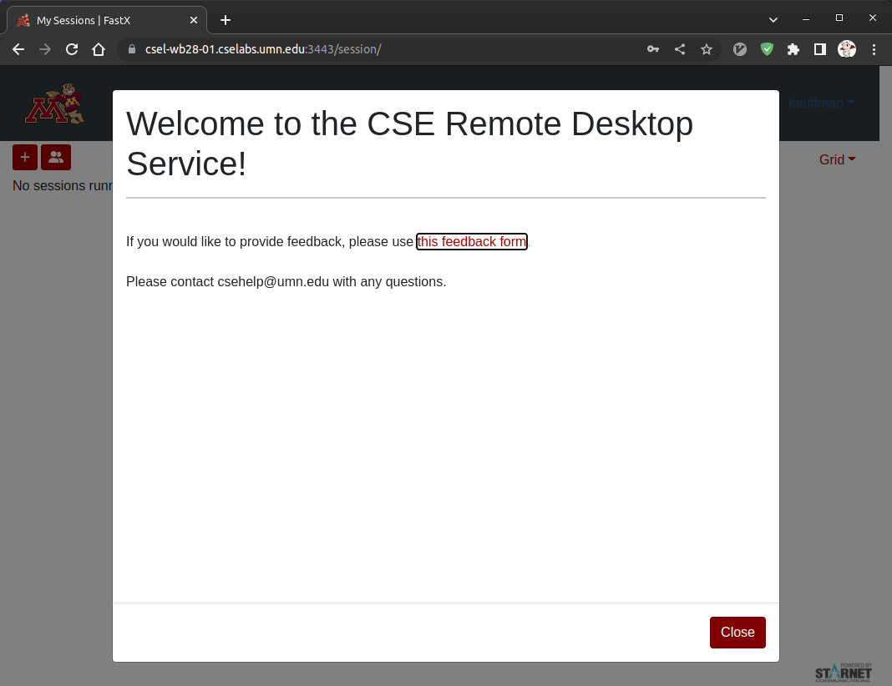
Select the + symbol to start a new login session; if you already have a
running login session, then it will be shown as an icon on this screen
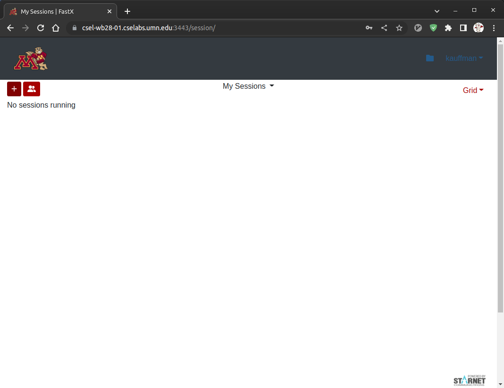
Select a Desktop environment which is how windows and icons will be shown. Either option will do but XFCE is somewhat more "traditional" than Gnome. Then press "Launch"
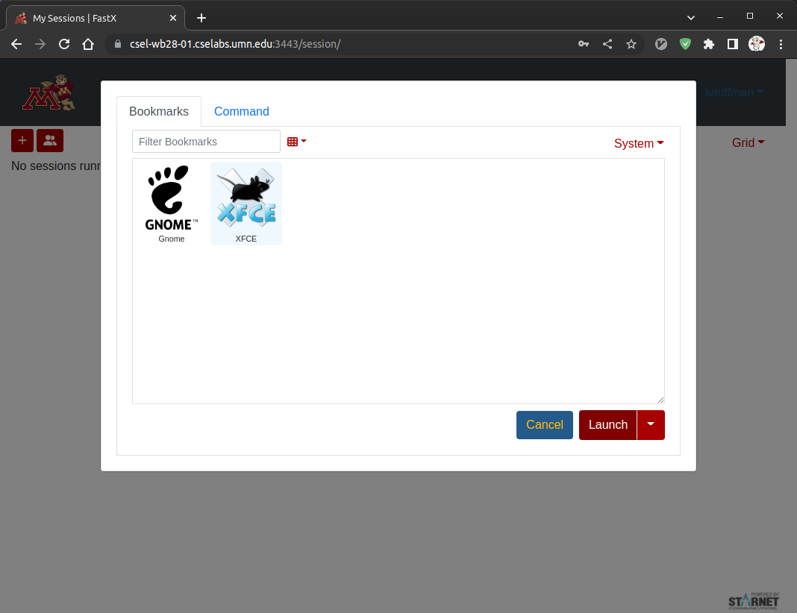
After a moment, the desktop environment will show up. The mouse and keyboard will function as expected and you can click on icons and menus within the browser. Any applications you start such as a Command Line Terminal or code editor will function within the browser. All these programs are running on a remote, UMN Linux computer.
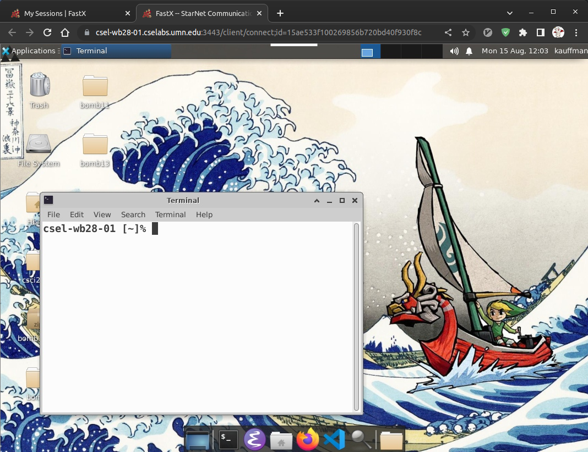
2.4 Vole for Graphical Login: http://vole.cse.umn.edu
Aside from individual machine access, CSE Labs provides a pool of Linux Virtual Machines for graphical web access via its VOLE system. Navigate to http://vole.cse.umn.edu, click the Connect to VOLE link and enter your login credentials.
VOLE currently runs on an the older FASTX2 system so may be a bit laggier than the FASTX2 connections to individual machines. Many students notice see this when the system fails to respond for a short time or a single press of the "x" key results in "xxxxxxxxxxxxxxxxxxxxxx" showing up on their screen For these reasons, it is also good to familiar with alternatives to VOLE described later.
Note: unless you are doing dedicated graphics programming, don't use the VOLE 3D nodes. Use normal VOLE. I have received reports that the memory checking program Valgrind can report spurious errors on VOLE3D and should therefore be avoided.
2.5 SSH to CSE Lab Machines
CSE Labs allows you to remotely log into a variety of machines using the secure shell or SSH for short. For this you will need an SSH tool.
- Mac / Linux: Open a terminal and use the
sshcommand Windows: Open
cmd.exeand check that thesshcommand is present by typingssh Enter. Most recent Windows installs have it.If
sshis not installed, install PuTTY which is a classic favorite OR explore alternatives.
SSH connections are non-graphical and therefore are much more robust against slow network connections compared to tools like Vole.
Video Tutorial on SSH Login
Text Overview on SSH Login
To use SSH, you must first know the network address of a machine to log into. Select a machine name from the list of lab machines in CSE Labs and log in. My go-to is often
apollo.cselabs.umn.edu
To access apollo or other machines via SSH on a Unix terminal,
type the command below in a terminal on your machine.
ssh kauf0095@apollo.cselabs.umn.edu
|^^^^^^ |^^^^^^^^^^^^^^^^^^^^^
| +-> network address of remote machine
+->username on machine, UMN X.500 username
A login session would look something like this:
my-laptop>> ssh kauf0095@apollo.cselabs.umn.edu
kauf0095@apollo.cselabs.umn.edu's password: # PASSWORD TYPED Characters don't display
(kauf0095@atlas.cselabs.umn.edu) Duo two-factor login for kauf0095
Enter a passcode or select one of the following options:
1. Duo Push to XXX-XXX-1234
2. Phone call to XXX-XXX-1234
Passcode or option (1-2): 1 # ENTERED 1 to receive a Duo prompt on phone
Success. Logging you in...
----------------------------------------------------------------------
COLLEGE OF SCIENCE AND ENGINEERING WORKSTATION
If you are not authorized to access this system, disconnect now.
YOU SHOULD HAVE NO EXPECTATION OF PRIVACY
By continuing, you agree to the terms outlined in the Acceptable Use
Policy (AUP) governing use of this workstation. The AUP may be found
online at
https://cseit.umn.edu/knowledge-help/acceptable-use-policy
As a user of this system, it is YOUR responsibility to be familiar
with the information contained in the AUP.
Users requiring assistance should talk to the operator on duty:
They can be reached by any of the following means:
email: csehelp@umn.edu
or call 612-625-0876 The phones in the labs directly call operator.
You may also visit them in Keller Hall 1-201
----------------------------------------------------------------------
Last login: Sat Nov 2 17:20:27 2019 from 24.118.102.107
csel-apollo [~]% ls # SUCCESS: list files on apollo home
2021 Music results.json tree
4061 data lila mypubs
bin defgnome mail packgaes
blather Desktop Mail pdbs
burial-minimization Documents mailboxlist Pictures
cklayout Downloads matlab proteins
csel-apollo [~]% exit # DONE: exit shell to close connection
logout
Connection to apollo.cselabs.umn.edu closed.
my-computer>> # shell is now for home computer
3 Setting up SSH Keys for Password-Free Login
Using SSH, either directly or through higher mechanisms like VS Code's remote editing features, provides a lot of convenience. However, one is often peppered with password prompts and 2-factor authentication requests.
SSH supports key-based authentication, a cryptographic technique that can be used to skip password prompts while maintaining security. This section details how to set up SSH Keys for Password-Free login.
3.1 Video Tutorial SSH Key Authentication
3.2 Text Tutorial SSH Key Authentication
Sick of typing your password + doing Duo authentication? Use the following commands to set up a pair of encryption keys that will allow password and Duo-free login.
NOTE: Doing these steps in a terminal will also alleviate password prompts in VS Code Remote Editing.
mylaptop>> ssh-keygen -t rsa # press enter a few times for default options # ON SOME PLATFORMS mylaptop>> ssh-copy-id myx500@atlas.cselabs.umn.edu # enter password and Duo verify # IF ERRORS LIKE 'ssh-copy-id not found' (likely on Windows/Mac) use # the following instead: mylaptop>> scp .ssh/id_rsa.pub myx500@atlas.cselabs.umn.edu:.ssh/authorized_keys # copys public key to remote machine as authorized # IF ERRORS LIKE scp: dest open ".ssh/authorized_keys": No such file or directory scp: failed to upload file .ssh/id_rsa.pub to .ssh/authorized_keys # Create .ssh on remote directory via mylaptop>> ssh kauffman@atlas.cselabs.umn.edu password: .... Duo Authenticate: 1 atlas>> mkdir .ssh atlas>> exit # Then run same command again mylaptop>> scp .ssh/id_rsa.pub myx500@atlas.cselabs.umn.edu:.ssh/authorized_keys # WHEN SUCCESSFUL... mylaptop>> ssh myx500@atlas.cselabs.umn.edu ... # no password prompt required, no Duo verify required atlas>>
4 Moving Files Between Machines
When working on remote machines, it is often necessary to transfer files between a local (home) computer and the remote (lab) machines. There are a number of graphical tools to do this on all platforms: just use search terms like
- "secure file transfer on windows"
- "secure file transfer on mac osx"
and you are likely to find free versions.
Non-graphical tools for file transfer are usually very fast, robust, and easy to use once your learn their quirks.
4.1 scp: remote copying on the terminal
If you have access to ssh in a terminal on your home computer, you
very likely have access to scp which uses the same secure connection
protocol but to transfer files rather than set up an interactive
shell. It has a syntax that combines ssh and the Unix cp (copy)
program.
Video Demonstration of SCP
Text Examples of SCP
# FROM HOME TO LABS # copy file.txt from home computer to apollo, place file in my home directory on apollo > scp file.txt kauff0095@atlas.cselabs.umn.edu: # same as above but place file.txt in ~/code/docs on apollo > scp file.txt kauff0095@atlas.cselabs.umn.edu:code/docs/ # copy the entire directory p1-code/ to apollo, put it in ~/csci2021 on apollo > scp -r p1-code/ kauff0095@atlas.cselabs.umn.edu:csci2021/ # FROM LABS TO HOME # copy file.txt in home directory on apollo to the current directory > scp kauff0095@atlas.cselabs.umn.edu:file.txt . # same as above but file.txt is in ~/code/docs on apollo and place it in directory code/ > scp kauff0095@atlas.cselabs.umn.edu:code/docs/file.txt code/ # copy the entire directory ~/csci2021/p1-code/ from apollo to current directory > scp -r kauff0095@atlas.cselabs.umn.edu:csci2021/p1-code .
4.2 Transferring files on FASTX 3 Connections
Transferring files using newer FASTX 3 graphical connections is a breeze.
Mouse over the small menu at the top of the screen FASTX3 browser tab which sometimes automatically collapses. Click the "Folder" icon.
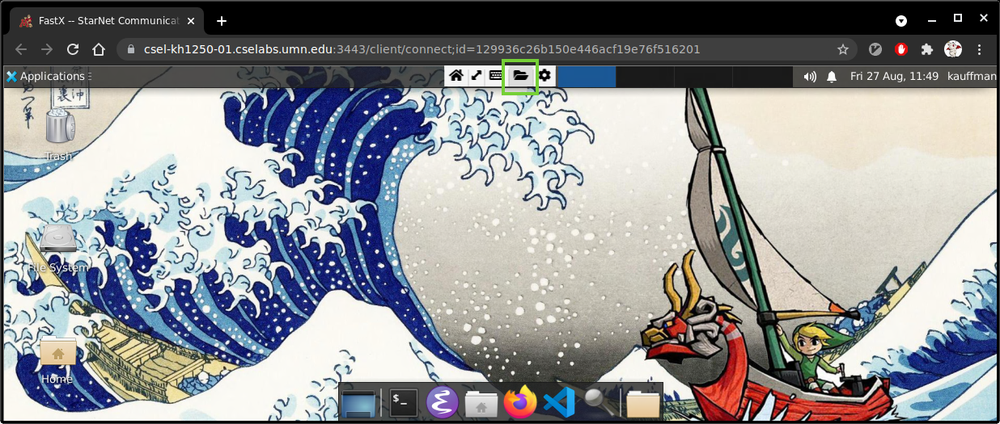
This will open a file browser for the remote machine. Click the small "Cloud/Up Arrow Icon" which is to initiate an upload.
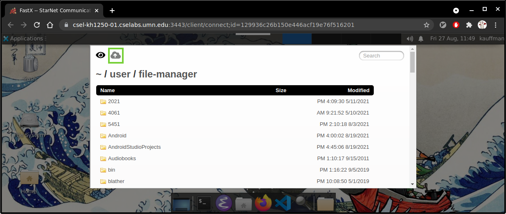
This will open a file browser for your local files (those on your personal machine). Select a file and confirm with "Okay/Open" and it will be uploaded to the remote machine, usually to your Home Directory.
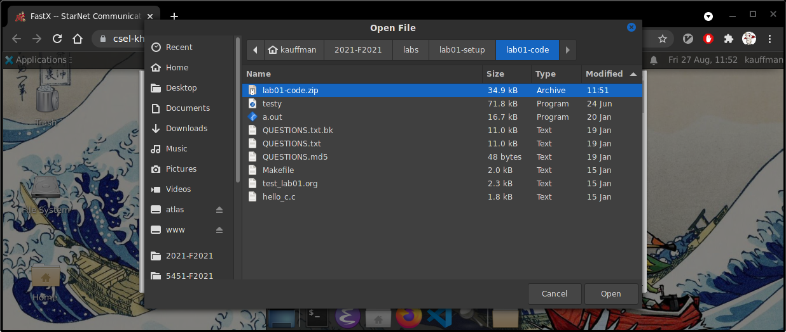
The uploaded file will appear in the FASTX 3 file browser and can be accessed normal tools on the remote machine like the Terminal or a graphical file browser.
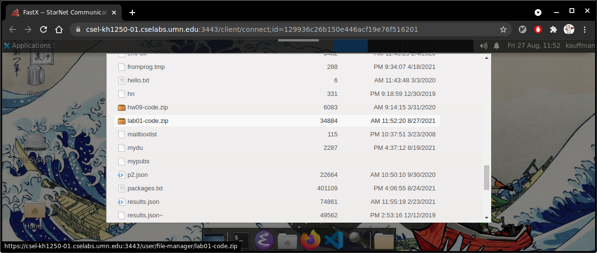
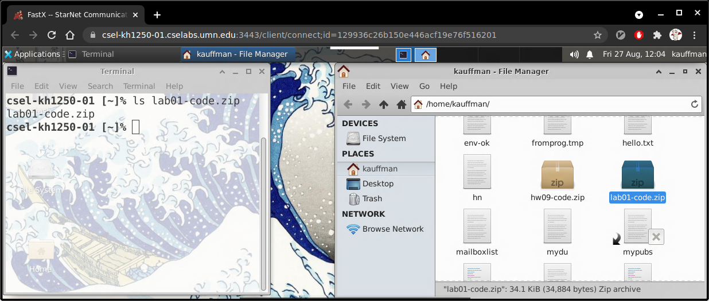
Files can also be downloaded from the FASTX 3 file browser by clicking on them which will prompt for a location on the local machine to download the remote file.
4.3 Remote Mounts on Windows / Mac
CSE Labs has some information on mapping a local folder/drive to a CSE Labs account location. This can make transfers much easier as they become drag/drop rather than command line interactions.
https://cse.umn.edu/cseit/self-help-guides/mount-unix-directory-mac-or-pc
NOTE: Remote mounts may require use of a VPN to the University. Instructions from the University are here:
https://it.umn.edu/services-technologies/virtual-private-network-vpn
4.4 sshfs and FUSE
Some systems support a way to "mount" a remote machine filesystem through an SSH connection. The net effect of this is that copying files into what looks like a local folder actually transfers them to a remote machine and copying them from that folder transfers from that machine. This behavior is often not present by default but is incredibly useful and has saved me countless hours of toil. You can investigate these for your system of choice
- Mac OSX FUSE / sshfs: https://osxfuse.github.io/
- SSHFS on Linux: Most Distributions have a package for SSHFS
- Ubuntu: https://help.ubuntu.com/community/SSHFS
- Mint: https://community.linuxmint.com/software/view/sshfs
- Arch Linux: https://wiki.archlinux.org/index.php/SSHFS
- etc.
- Windows: best achieved through the Windows Subsystem for Linux
Video Tutorial of SSHFS
Text Tutorial on SSHFS
Once set up, an sshfs command can be issued to mount a remote folder
on an empty local folder. I often use the following command to mount
my home directory on remote machine apollo.cselabs.umn.edu on a
local directory called apollo:
# use sshfs to mount remote directory as local directory > sshfs kauffman@apollo.cselabs.umn.edu: ./apollo # transfers remote file to home computer > cp ./apollo/file.txt . # transfers local directory to remote computer > cp -r p1-code/ ./apollo # unmounts remote directory > fusermount -q -u -z ./apollo
5 Visual Studio Code Remote Editing
Visual Studio Code (VS Code) has become a popular code editor / Integrated Development Environment (IDE) that many students and staff use. While our course has no "official" code editing environment, many staff members are knowledgeable about VS Code and point to its remote code editing features/plugins as particularly useful for courses like ours. The capability allows you to edit code on other computers as if it were on your local machine. While this capability is not unique to VS Code (and is in fact based on SSH), VS Code provides an easy and useful means of accessing this ability. Below are several sets of instructions on how to do this.
Many students prefer VSCode as their primary method of accessing school Unix/Linux environments.
5.1 Staff Video Tutorials
TA Mohamed Aboushanab constructed an excellent setup tutorial for VS code which is specifically tailored to CSCI 2021 students but is likely useful for anyone setting up VS Code for Remote Editing.
Professor Kauffman also constructed a somewhat less "professional" demonstration of how to set up VS Code.
5.2 Staff Web Tutorial
TA Tien Dinh constructed a guide during the Fall 2020 semester on setting up remote editing in VS Code which is comprehensive and has been vetted by the teaching staff. The direct link is here: https://tienpdinh.com/posts/remote-vscode
5.3 Text Guide by a Student
The following information was shared by student Dan Runningen during the Fall 2020 semester and was reported as very useful by several other students. It hasn't been vetted by the staff but looks legit and useful.
As long as you have access to your labs account, your credentials should work via SSH. Instructions on how to set-up SSH for VSCode can be found here, however my set-up was a little different.
- You do need to ensure you have an ssh client installed.
You will need the plug-ins below. I believe the first three may be already installed for you, but "Remote Development" is the important one.
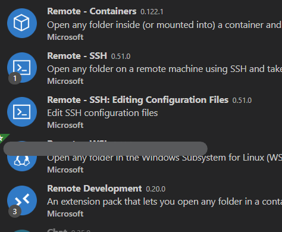
- After installing the plug-ins, you will need to reload the editor.
Open up the "Remote Explorer" panel.
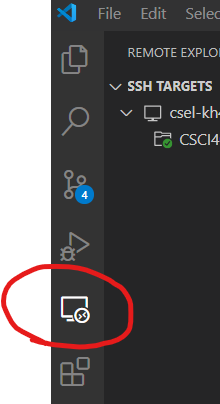
- Change the drop-down to "SSH Targets"
- Click the "+" directly underneath to add a new connection.
The window will ask you for your ssh command. You need the full command and be sure to include the
-Aoption otherwise the connection won't complete. Example:ssh -A stude028@atlas.cselabs.umn.edu
This will connect to machine
atlas. Other possible lab computers are here.
- Click on the option to save the command in your personal files, not your program files.
- Click the connection and enter your password in the new window.
- This will allow you you work in an interactive IDE through the school's environment. The connection is faster since all the rendering is done client-side and not being transmitted through a web browser. You also have access to the terminal directly through the "Terminal" menu.
6 Local Linux Environments
It is fun and profitable to set up your own machine to compile code for the class. While not strictly required, most students find it more convenient to compile and run code on their own computer rather than relying on remote access to other machines. The following sections outline some options on how to set up a local Unix environment.
6.1 Virtual Machines on Mac or Windows
Running Virtual Machine software allows you to have a "guest" operating system, likely free Linux, which has separate software from the "host" OS. A great option for this is running VirtualBox on your Host OS (Windows or Mac) with a Linux distribution as the "Guest" OS.
In almost all cases, compiling and running code on a Linux VM (virtual machine) will behave identically to a "native" Linux. However, students, especially those on MacOS, indicate setting up VMs to be difficult. If these paths prove difficult, consider using the zero-cost FASTX remote desktop options.
Below are a list of beginner tutorials on installing VirtualBox and a Linux VM.
- How to Install Linux on Windows or Mac with VirtualBox - Beginner
Video by IT Career Questions (YouTube)
- ~15min video
- Install Ubuntu Linux for easiest experience, NOT Kali Linux
- No need to make any monetary contributions when downloading anything
- Mac OSX users will need to adjsut their security settings to allow VirtualBox to work, see the guide How to Fix VirtualBox’s “Kernel Driver Not Installed (rc=-1908)” Error on a Mac.
- WINDOWS USERS ARE NOT recommended to use Virtualbox, use the Windows Subsystem for Linux instead
- How to set up VirtualBox and Install Ubuntu OS (Mac) by ISOM Suffolk
(YouTube)
- ~22min video
- Mac OSX install of Ubuntu Linux Guest
- Mac OSX users will need to adjsut their security settings to allow VirtualBox to work, see the guide How to Fix VirtualBox’s “Kernel Driver Not Installed (rc=-1908)” Error on a Mac.
- Create Shared Folder Between Mac OS X and Ubuntu Linux via
VirtualBox by Abanoub Hanna (YouTube)
- ~4min video
- Allows files to be accessed both between both Host (Mac) and Guest (Linux)
- Setup is very short and easy
After installing Linux, you are likely to need some tools. The names for these vary but on Ubuntu they are usually as follows
build-essential: compiler toolchain based ongccvalgrind: memory checkergdb: debugger
Usually performing the following command in an Ubuntu Linux terminal will update the package lists and install all of these:
> sudo apt update > sudo apt install build-essential valgrind gdb zip unzip
NOTE for Mac Users with New M1 Processor Machines
The above recommended software VirtualBox does not support the M1 processor so will not work to create a compatible virtual machine. If your course requires an x86-64 architecture for assembly programming (like CSCI 2021 does) then your only choice is to log into a UMN machine that has this type of processor.
6.2 Windows Specific Options
While Windows does not have Unix tools by default, Windows 10 supports the Windows Subsystem for Linux on Windows 10. This allows a Linux system to be installed with very little effort complete with compiler and debugging tools.
- Install a flavor of Linux such as Ubuntu (Video Tutorial, highly recommended)
- Start a linux command line via the
bashprogram - Follow the Linux installation instructions appropriate to the distro (see Linux/Unix instructions)
After installing Linux, you are likely to need some tools. The names for these vary but on Ubuntu they are usually as follows
build-essential: compiler toolchain based ongccvalgrind: memory checkergdb: debugger
Usually performing the following command will update the package lists and install all of these:
> sudo apt update > sudo apt install build-essential valgrind gdb zip unzip
NOTE: Assembly produced by gcc will target the Windows architecture
and is not likely to work on lab Linux machines where we will
grade. Make sure to verify your code works in those environments as
well.
NOTE: Older options for getting a Unix environment include Cygwin and MinGW but these are discouraged as they will not be fully compatible with the tools used in the course.
6.3 Mac OSX
Unfortunately, Mac OSX no longer has good support for the tools used in this course.
To get a local working environment, Mac OSX users are encouraged to install a virtual machine software like Virtual Box and Ubuntu Linux. The earlier section on Virtual Machines gives some tutorials on how to perform the install.
Historically Mac OSX had better support for native Unix development but changes over the last few years to the default configuration of OSX has made it unlikely to be able to work use tools that are central the course. These are as follows.
gcc: Most OSX installations come with a command calledgccBUT it is not actually the GNU Compiler Collection. It is usually the CLANG compiler. This is not compatible with our tools and it is not straightforward to get a real GCC installed.gdb: A learning goal for this course is to understand the basic utility of debuggers. We will focus ongdb. Unfortunately OSX does not come with this tool by default and installing it is a HUGE headache.valgrind: Testing C programs is not easy and the Valgrind memory checker makes it a lot easier. However, the most recent versions of OSX are not compatible with this tool. This is regrettable and there is no known solution at this time.- Assembly produced by any compiler on Macs will target the OSX architecture and is not likely to work on lab Linux machines where we will grade. This can lead to loss of credit.
6.4 Native Linux
Linux is a Unix-like OS. Installing Linux natively on your own computer is NOT required but can be quite useful. For those new to Linux, good beginner distributions (flavors) of Linux include.
The site DistroWatch maintains an up-to-date list of popular Linux distributions and various properties of them.
7 Basic Navigation in a Unix Terminal
On logging into the machine you will work on, you will need to make
sure that you get the codepack linked at the top associated with the
lab and unzip it which will create a directory called lab01-code
with C files for you to analyze. To compile and run these, open a
terminal and navigate to the directory lab01-code. This is usually
done by issuing a series of "change directory" or cd commands as in
the following brief demo.
kauffman [~]$ cd csci2021 kauffman [~/csci2021]$ ls lecture-stuff/ hw01-code.zip hw01-code/ kauffman [~/csci2021]$ cd hw01-code/ kauffman [~/csci2021/hw01-code]$ ls age.c collatz_funcs.c collatz.h collatz_main.c QUESTIONS.txt
If you are inexperienced working with a terminal (also called command line or shell), then the following tutorial should give you the basics to get through most of the course.
8 All Tutorial Videos
FASTX and VOLE Overview
SSH Login Basics
Visual Studio Code Remote Editing
Visual Studio Code Remote Editing: Mohamed
SSH Keys for Password-free Login
SCP for File Transfer with Remote Machines
SSHFS for Remote Mounting / Editing
9 CHANGELOG
- Thu Oct 6 04:10:20 PM CDT 2022
- Added video tutorials for several of the topics including SSH Key-based authentication.
- Thu Sep 8 09:43:04 AM CDT 2022
- Added in Mohamed's VS Code video tutorial. Added note about Apple M1 chips not being supported by VirtualBox.
- Tue Aug 30 10:46:52 AM CDT 2022
- Updated some information and added pictures to document logging into FASTX 3.
- Fri Aug 27 12:18:40 PM CDT 2021
- Added new FASTX 3 information. Minor updates to encourage these/remote editing rather than WSL or Virtual machines.
- Fri Jan 22 11:23:34 AM CST 2021
- Added
apt updateandunzippackages to the recommended packages for Linux/WSL installs. - Thu Jan 14 02:52:22 PM CST 2021
- Added an executive summary and updated some links to reflect Spring 2021.
- Thu Sep 3 11:05:11 AM CDT 2020
- Updates to the Virtual Machine section to apprise Mac OSX users to a common security setting that must be changed to make Virtualbox work.
- Fri 28 Aug 2020 11:52:13 AM CDT
- Updated instructions on VS Code to remotely edit CSE lab machines code to include official staff-produced guide.
- Mon 24 Aug 2020 09:30:15 AM CDT
- Added graphical access to CSE Lab machines through the web via vole-like technology.
- Mon 03 Aug 2020 02:52:31 PM CDT
- Added overview of using VS Code to remotely edit CSE lab machines code.
- Tue 07 Jul 2020 11:12:03 PM CDT
- Added some information on
transferring files via
scpandsshfsalong with some additional notes on the CSE Labs Vole system.